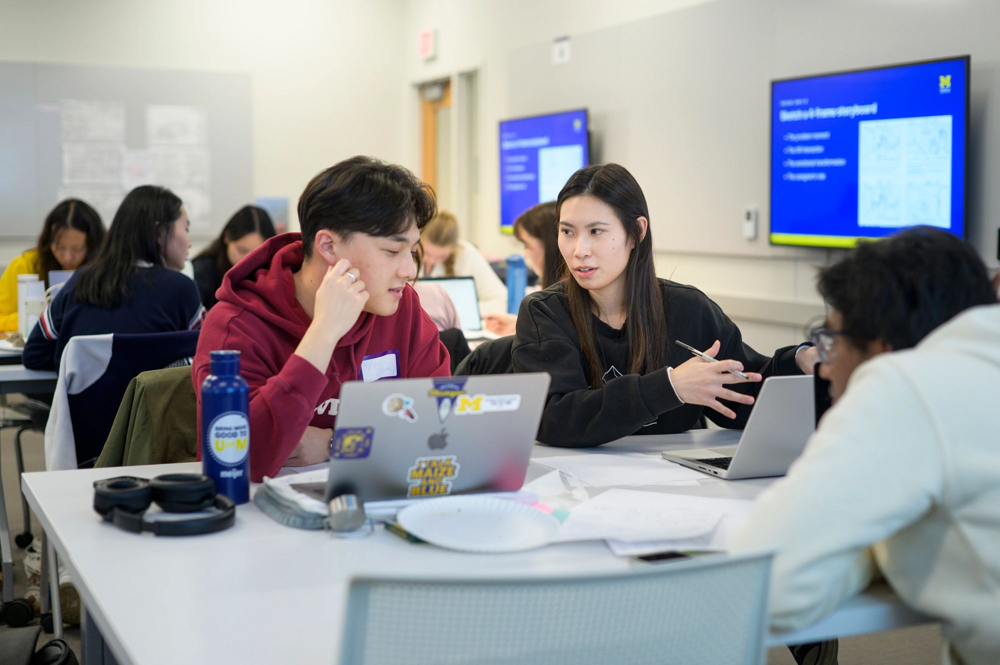

Steps for a Successful Internship Search
Landing the right internship takes strategy, preparation, and persistence. Planning your internship search early can help you discover opportunities that align with your skills, interests, and career goals—and give you the confidence to stand out to employers.
Tip: Start early! Many companies recruit interns 6–9 months in advance, so creating a search plan now will give you a head start.

Step 1: Define Your Goals
- Identify your career interests and industries you’d like to explore.
- Decide what you hope to gain from an internship: skills, mentorship, networking, or industry exposure.
- Consider location, company size, and company culture preferences.
Step 2: Update Your Application Materials
- Resume: Highlight relevant experience and skills. See our Resume page.
- Cover Letter: Tailor for each application; explain your interest and value.
- Portfolio/Project Samples: Include links or attachments to showcase your work.
Step 3: Research Opportunities
- Use UMSI Career Link, LinkedIn, Handshake, and company websites to find openings.
- Attend career fairs, employer info sessions, and networking events.
- Reach out to alumni, faculty, and professionals for advice and leads.
Step 4: Organize Your Search
- Track applications, deadlines, and follow-ups using a spreadsheet or project management tool.
- Set aside weekly time blocks to research, apply, and prepare for interviews.
Step 5: Prepare for Interviews
- Review common interview questions for your field.
- Practice behavioral interviews using the STAR method (Situation, Task, Action, Result).
- Research the company’s culture, mission, and values to demonstrate fit.
Step 6: Follow Up & Reflect
- Send thank-you notes after interviews or informational meetings.
- Keep track of lessons learned from each application to improve your next one.
- Persistence and reflection are key—don’t get discouraged.

Essential Resources
- UMSI Career Link – Your exclusive portal for internships and jobs.
- Talk to a Career Coach – Personalized guidance for your search strategy.
- Career Events & Info Sessions – Workshops and employer sessions to expand your network.
Internship Planning FAQ
-
When should I start my search?
Begin planning 6–9 months before your desired internship. Some companies recruit even earlier. -
How many applications should I submit?
Quality over quantity—apply to roles that match your goals, but aim for a balanced number of applications to maximize opportunities. -
Should I network for internships?
Yes! Networking can uncover hidden opportunities and give you a competitive advantage. See our Networking page for tips. -
What if I don’t have prior experience?
Highlight relevant coursework, projects, volunteer work, or transferable skills. Employers value potential and initiative.
Optional Tips & Enhancements
- Include a visual timeline of a semester-by-semester internship planning guide.
- Create an “Internship Application Checklist” for students to follow.
- Add mini-testimonials from students who successfully landed internships.